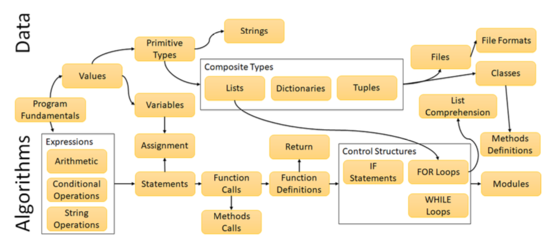

Curriculum Roadmap
“PythonSneks: An Open-Source, Instructionally-Designed Introductory Curriculum with Action-Design Research” by Bart, Sarver, Friend, and Cox is one of my favorite papers from this year’s SIGCSE conference. It describes an introductory Python course for STEM majors who aren’t in Computer Science that was designed using many of the same principles taught in the Carpentries’ instructor training and now in RStudio’s instructor training and certification. Along with a detailed description of content and activities, the paper includes this topic map showing how topics are connected:

I’d love to see topic maps like this for more courses.
They would be even more useful, though, if they were findable,
but I don’t know how to do that.
I learned last year
that lesson repositories have failed so consistently that we shouldn’t build another one,
but instead should focus on making the lessons we have easier to find.
If the diagram is SVG and the nodes have appropriate alt text,
then search engines might be able to index the content,
but how would they detect that this diagram is (part of) a lesson description?